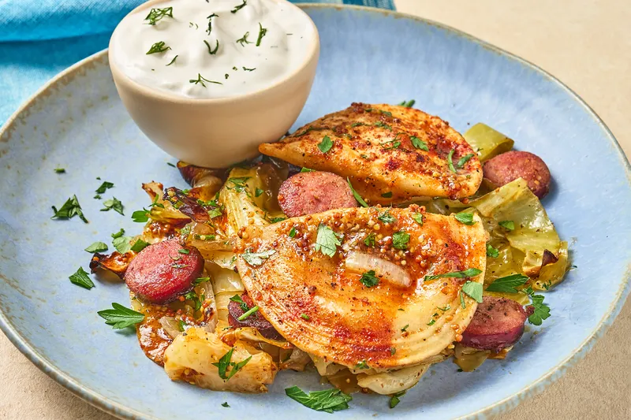

13 Easy Sheet Pan Dinners That Practically Cook Themselves
Home

Description
1. Sheet pan meals are always easy—and the cleanup? Even easier. But on the scale of easy dinners, these 10 are next level. Every ingredient goes on the pan at the same time, then straight into the oven. Just set it and forget it; these dinners practically cook themselves.
-
salt 3 tsp
-
ground meat 0.8 kg
- pepper 1 pinch
-
tomato paste 100 ml
-
carrot 2 pcs
-
bay leaves 2 pcs
Steps
-
Sauté the onions over some oil. Add ground meat, chopped carrots, seasoning and stir.
-
Cube the tomato and add it to the meat. Add tomato paste and pour with water. Simmer for about 15 minutes.
-
Prepare the Béchamel. Melt the butter in a small saucepan. Add flour and wait for it to turn yellow. Add milk and stir. Season with salt and nutmeg.
-
Grease the baking tray and cover the bottom with one layer of lasagne sheets. Spread the meat sauce over it. Add the béchamel sauce and some grated cheese.
-
Proceed with the next layers. Add the Béchamel and sprinkle the grated cheese more generously over the last layer.
Easy Sheet Pan Chicken & Vegetables
Description
This sheet pan chicken dinner is a perfect solution for busy weeknights. Juicy chicken and colorful vegetables bake together in one pan, absorbing all the flavors while you relax. Minimal prep, minimal cleanup, maximum taste.
- salt 2 tsp
- chicken thighs 1 kg
- black pepper 1 pinch
- paprika 1 tsp
- potatoes 4 pcs
- bell pepper 2 pcs
- olive oil 3 tbsp
Steps
- Season the chicken with salt, pepper and paprika.
- Peel and cut the potatoes into wedges. Slice the bell peppers.
- Place chicken and vegetables on a baking tray. Drizzle with olive oil and mix well.
- Bake in a preheated oven at 200°C for about 40–45 minutes, until golden and cooked through.